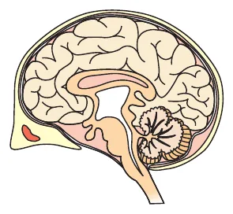
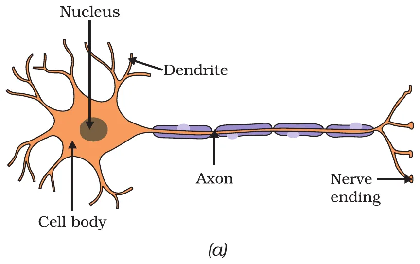
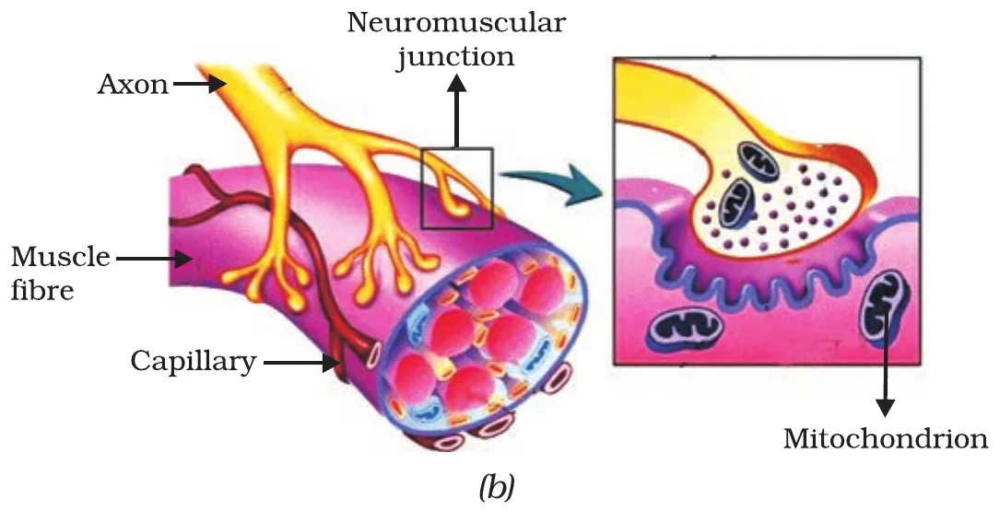
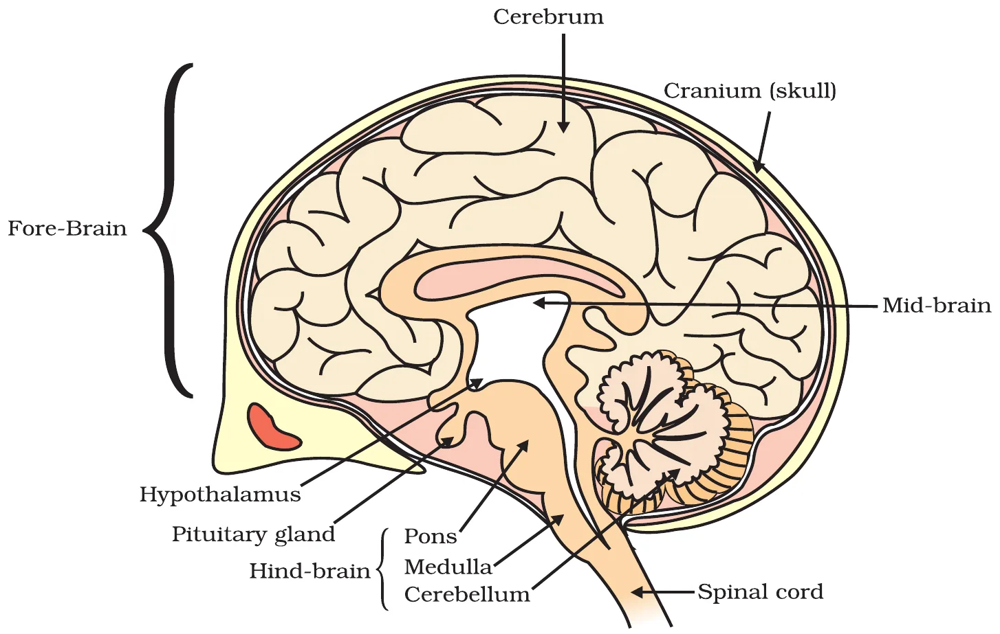
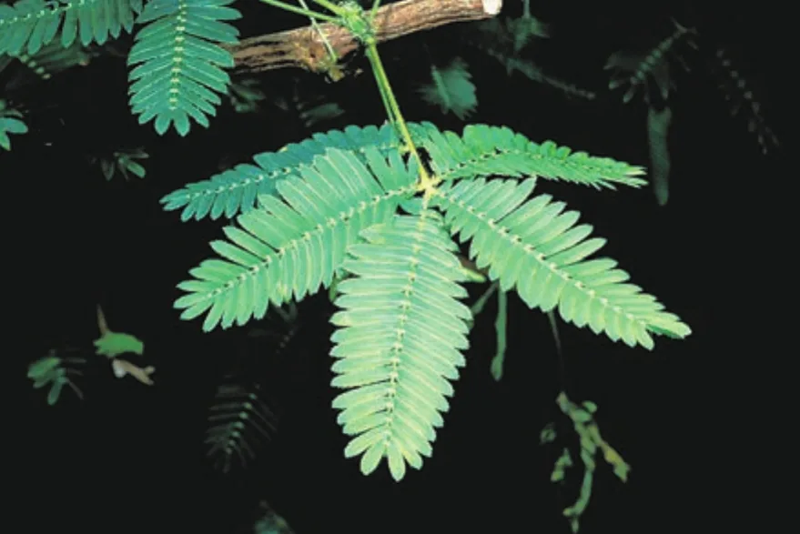
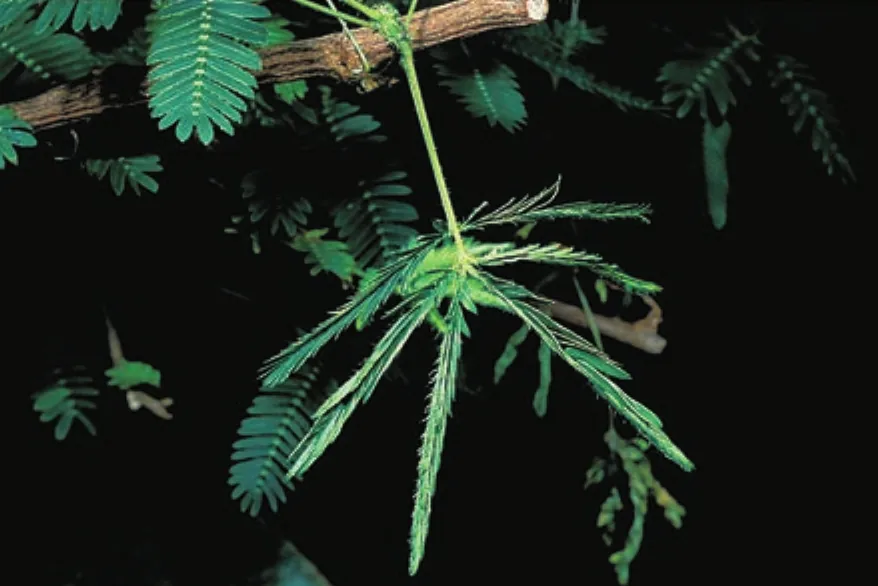
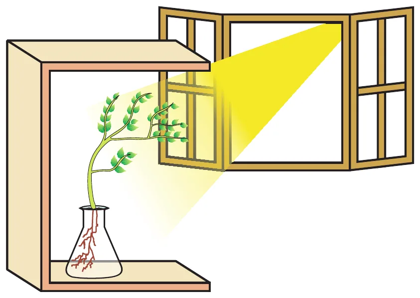
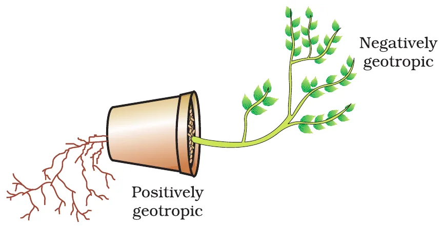
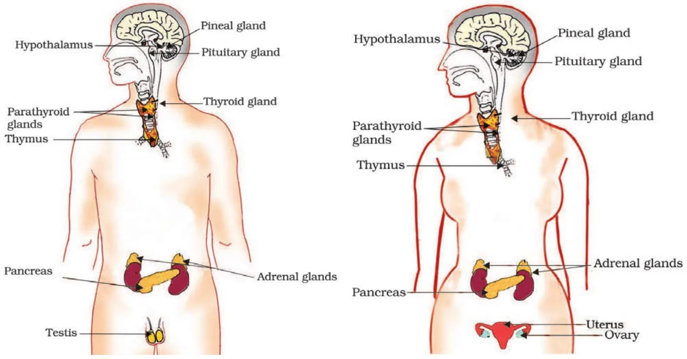

📌 Chapter snapshot
- Chapter 6 of NCERT Class 10 Science (reprint 2026-27), 13 pages, in Unit II “World of Living” (25 marks in the 80-mark theory paper, with Life Processes, How do Organisms Reproduce? and Heredity).
- Asked every year: a brain part MCQ (cerebellum, medulla), an Assertion–Reason on reflexes, reflex arc (3 marks, 2024), sensory vs motor nerve (2026), touch-me-not vs tendril (2025), auxin (2025), thyroxin and goitre (2024) and insulin and feedback (2023).
- Diagrams to practise: neuron (Fig. 6.1a, asked in NCERT Exercise 5), reflex arc (6.2), human brain (6.3). Know the positions of the endocrine glands (6.7).
Why do we need control and coordination?
We think of movement as a sign of life. Some movements are the result of growth (a seedling pushing up through soil); others are not connected with growth (a cat running, children on swings, a buffalo chewing cud).
- Movement is usually a response to a change in the environment (a stimulus): the cat runs because it has seen a mouse.
- Organisms also try to use changes to their advantage: plants grow out into sunshine; buffaloes chew cud to break tough food.
- When bright light falls on our eyes or we touch a hot object, we detect it and move to protect ourselves.

Every movement is carefully controlled: each kind of change produces the right response (we whisper to a friend in class instead of shouting). So living organisms need systems providing control and coordination, made of specialised tissues.
🐾 Animals
Nervous system (fast, electrical) + hormones of the endocrine system (slower, chemical). Muscles do the final action.
🌱 Plants
No nerves, no muscles. They use electrical-chemical signals from cell to cell and plant hormones; cells move by changing their water content.
🎯 Purpose
Detect a change, decide, and respond with only the correct movement, at the right time and place.
Animals: the nervous system
Control and coordination in animals is done by nervous and muscular tissue (studied in Class 9).
Receptors: where information comes in
- All information from the environment is detected by the specialised tips of some nerve cells, called receptors.
- They are usually in our sense organs: inner ear (hearing, balance), nose, tongue, eyes, skin.
- Gustatory receptors detect taste (tongue); olfactory receptors detect smell (nose). Photoreceptors (eye), phonoreceptors (ear) and thermoreceptors (skin) detect light, sound and heat.
The neuron: structure (Fig. 6.1 a)
- Dendrites: short, branched extensions of the cell body. Information is acquired at the dendritic tips.
- Cell body (cyton): contains the nucleus and cytoplasm.
- Axon: a long fibre that carries the impulse away from the cell body. It is covered by an insulating sheath.
- Nerve ending (axon terminal): here the electrical impulse releases chemicals.
🧠 Remember the one-way path
Dendrite → Cell body → Axon → Nerve ending → synapse. (“Do Cats Always Nap?”)

How a nerve impulse travels
- Information acquired at the dendritic tip sets off a chemical reaction that creates an electrical impulse.
- The impulse travels from the dendrite → cell body → along the axon to its end.
- At the end of the axon, the impulse sets off the release of chemicals (neurotransmitters).
- These chemicals cross the gap, called the synapse, and start a similar electrical impulse in a dendrite of the next neuron.
- A similar synapse finally delivers impulses from neurons to muscle cells or glands: the neuromuscular junction (Fig. 6.1 b).
⭐ NCERT in-text question: parts of a neuron
(i) Information is acquired at the dendrites (dendritic tips). (ii) It travels as an electrical impulse through the axon (dendrite → cell body → axon). (iii) It is converted into a chemical signal at the nerve ending (axon terminal), for passing across the synapse.
⚡ Try it: send a nerve impulse
Press Next to follow the message from one neuron to the next and then to a muscle. Yellow = electrical impulse, green dots = chemical messenger.
Neuromuscular junction (Fig. 6.1 b)
- The branched axon endings spread over a muscle fibre. The magnified box shows an axon ending full of tiny vesicles (bags of chemical) sitting on the folded surface of the muscle.
- Muscle fibres have many mitochondria (energy for contraction) and are supplied by capillaries.
- The chemical released here makes the muscle contract: this is how the nervous system finally acts.
So nervous tissue is an organised network of neurons specialised for conducting information via electrical impulses from one part of the body to another.

Activity 6.1: taste needs smell
- Put sugar in your mouth; then block your nose and taste it again; also try eating lunch with your nose blocked.
- Observation: the sugar still tastes sweet, but food tastes dull and flat; you cannot fully enjoy its flavour. The same happens when you have a cold.
- Reason: the tongue's gustatory receptors detect only basic tastes (sweet, salty, sour, bitter, umami). The full flavour of food comes from smell: food vapours reach the olfactory receptors in the nose. With the nose blocked, the brain gets only half the information.
👅 Try it: taste + smell = flavour
Pick a food, then block or open the nose. The bars show what the brain receives from the tongue and from the nose.
What happens in reflex actions?
We say “I pulled my hand back from the flame reflexly” or “my mouth watered reflexly”. The common idea: we do something without thinking about it, or without feeling in control, yet in response to a change in the environment.
📖 Definition
A reflex action is a sudden, automatic and involuntary response to a stimulus, done without thinking, for example pulling the hand back from a flame, blinking when something comes near the eye, the pupil getting smaller in bright light, sneezing, coughing.
Why not just think and then move?
- Thinking is a complex activity involving a complicated interaction of many nerve impulses from many neurons. The “thinking tissue” is a dense network of neurons in the forward end of the skull.
- Signals from the hand would have to go all the way to the brain, be thought about, and come back to the muscles. That takes time: we might get burnt first.
- Solution: connect the nerves that detect heat to the nerves that move muscles in a simpler, shorter way. This connection is a reflex arc.
The reflex arc (Fig. 6.2)
- Stimulus: heat of the pan.
- Receptor: heat/pain receptors in the skin.
- Sensory neuron: carries the impulse to the spinal cord.
- Relay neuron in the spinal cord (CNS) connects it to the motor neuron.
- Motor neuron: carries the command out.
- Effector: muscle in the arm contracts; the hand is pulled away (response).
Reflex arcs are formed in the spinal cord itself, because nerves from all over the body meet there in a bundle on their way to the brain. The information also goes on to the brain (red arrow “message to brain”), so we become aware of the pain afterwards.
🔥 Try it: the reflex race
Touch the hot pan and see the message race along the two routes. The thinking route goes up to the brain and back; the reflex route turns round in the spinal cord. (Times are rough classroom estimates.)
🤔 Why did reflex arcs evolve?
The thinking process of the brain is not fast enough. Many animals have very little or none of the complex neuron network needed for thinking, so reflex arcs probably evolved as efficient ways of functioning without true thought. Even after complex brains evolved, reflex arcs stay more efficient for quick responses.
⭐ NCERT: trace the events when bright light is focused on your eyes
Bright light (stimulus) → photoreceptors in the retina detect it → impulse along the sensory (optic) nerve → the reflex centre in the brain (mid-brain region) → motor nerve → muscles of the iris (effector) contract → the pupil becomes smaller, so less light enters and the retina is protected. This happens automatically, without thinking: the pupil reflex.
⏱️ Try it: test your reaction time
Press Start. When the box turns green, tap it as fast as you can. This is a voluntary action (you see, decide and press), so it is slower than a true reflex. Try five times.
🗂️ Sort it: reflex, voluntary or involuntary?
Pick a type, then tap every action that belongs to it. Wrong taps shake.
The human brain
The spinal cord does more than reflexes: it is made of nerves that supply information to think about. Thinking needs more complex connections, which are concentrated in the brain, the main coordinating centre of the body.
Central nervous system (CNS)
Peripheral nervous system (PNS)
Voluntary actions such as writing, talking, moving a chair or clapping are based on deciding what to do next. So the brain must also send messages to muscles: this is the second way the nervous system talks to muscles (the first is the reflex arc).
Three parts of the brain (Fig. 6.3)
| Region | Parts | Main functions |
|---|---|---|
| Fore-brain | Cerebrum, hypothalamus | Main thinking part. Sensory areas for hearing, smell, sight; association areas that interpret information with stored memory; motor areas controlling voluntary muscles; a separate hunger (satiety) centre tells us we have eaten enough |
| Mid-brain | Mid-brain | Controls involuntary actions (with the hind-brain), e.g. reflex movements of the head, neck and eyes, change in pupil size |
| Hind-brain | Pons, medulla, cerebellum | Medulla: involuntary actions such as blood pressure, salivation, vomiting (also heartbeat, breathing). Cerebellum: precision of voluntary actions, posture and balance (walking straight, riding a bicycle, picking up a pencil). Pons: helps regulate breathing |
Also labelled: cranium (skull), pituitary gland (hangs below the hypothalamus), spinal cord.

🧠 Try it: brain explorer
Tap a part of the brain to light it up and read what it does, and what would go wrong without it.
🎯 Who controls it?
Read the action and pick the part of the nervous system in charge.
How are these tissues protected?
💀 Bony box
The brain sits inside the cranium (skull).
💧 Fluid-filled balloon
Inside the skull the brain is wrapped in membranes filled with fluid (cerebrospinal fluid) that act as a shock absorber.
🦴 Backbone
The vertebral column (the hard bumpy line down your back) protects the spinal cord.
How does nervous tissue cause action?
- Nervous tissue collects, sends and processes information and makes decisions, but the final movement is done by muscle tissue.
- Muscle cells move by changing shape so that they shorten.
- They contain special proteins (actin and myosin) that change both their shape and their arrangement in the cell in response to nervous electrical impulses. The new arrangement gives the muscle cell a shorter form: the muscle contracts.
💪 Try it: make a muscle contract
Send impulses to the muscle fibre. The protein filaments slide over each other, so the fibre shortens and the bone is pulled.
🤔 NCERT: voluntary vs involuntary muscles, what is the difference?
Voluntary (skeletal, striated) muscles, e.g. in arms and legs, move when we decide: they get impulses from the motor areas of the fore-brain. Involuntary muscles (smooth muscles of the gut, blood vessels, iris; and cardiac muscle) move on their own, controlled by the mid-brain and hind-brain (and hormones); we cannot control them by thinking.
Coordination in plants
Plants have neither a nervous system nor muscles, yet they respond to stimuli. They show two types of movement:
Independent of growth
Dependent on growth
6.2.1 Immediate response: the sensitive plant (Fig. 6.4)
- No growth is involved, so the plant must actually move its leaves.
- The movement happens at a point different from the point of touch, so the information must be communicated.
- Plants use electrical-chemical means to pass the information from cell to cell, but there is no specialised tissue for conduction (unlike nerves).
- Instead of muscle proteins, plant cells change shape by changing the amount of water in them: they swell or shrink. Cells at the base of the leaflets lose water, so the leaflets fold.


Fig. 6.4 The sensitive plant
🌿 Try it: touch the touch-me-not
Tap the leaf (or the button). Watch the signal spread and the leaflets fold as the cells at their base lose water. They open again slowly.
6.2.2 Movement due to growth
Tendrils (pea plant)
- Pea plants climb using tendrils, which are sensitive to touch.
- When a tendril touches a support, the part in contact with the object grows less rapidly than the part away from it.
- So the tendril circles around the object and clings to it. (This is thigmotropism, a growth movement towards touch.)
🌀 Try it: coil a tendril
Drag the slider to let days pass. The outer side (away from the stick) grows faster than the inner side touching it, so the tendril wraps around.
Tropisms: directional growth
Environmental triggers such as light or gravity change the direction in which plant parts grow. These tropic movements can be towards the stimulus (positive) or away from it (negative).
| Tropism | Stimulus | Shoot | Root | Example |
|---|---|---|---|---|
| Phototropism | Light | Towards light (+) | Away from light (−) | Shoot bends to a window (Fig. 6.5) |
| Geotropism (gravitropism) | Gravity | Upwards, away (−) | Downwards, towards (+) | Tilted pot (Fig. 6.6) |
| Hydrotropism | Water | – | Towards water (+) | Roots grow towards a leaking pipe or moist soil |
| Chemotropism | Chemicals | Towards the chemical | Pollen tube grows towards the ovule | |
| Thigmotropism | Touch | Towards the support | Tendrils of pea coil round a stick | |
Activity 6.2: response to light (Fig. 6.5)
- Fill a conical flask with water, cover its neck with wire mesh and put 2–3 freshly germinated bean seeds on it.
- Keep it in a cardboard box open on one side, with the open side facing light from a window.
- After 2–3 days: shoots bend towards light, roots bend away from it.
- Turn the flask so that the shoots face away from light. After a few days: the old parts do not change direction, but the new growth bends towards light again (shoot) and away from it (root).
Conclusion: shoots are positively phototropic and roots negatively phototropic; the bending is due to growth, so only growing parts respond.

🤔 NCERT: how does this help the plant?
Shoots bending towards light get more sunlight for photosynthesis. Roots growing away from light (and down with gravity) go deep into the soil for anchorage, water and minerals.
Geotropism (Fig. 6.6)
- Roots always grow downwards: positively geotropic.
- Shoots usually grow upwards, away from the earth: negatively geotropic.
- Even when a pot is tipped on its side, the root turns down and the shoot turns up.

🪴 Try it: tip the pot
Turn the pot to any angle and let the plant grow. Gravity always pulls straight down on the screen, so watch where the new growth goes.
Fast and slow messages
- The sensitive plant moves very quickly; sunflowers following day and night move slowly; growth movements are even slower.
- Animal growth is also controlled in direction: our arms and fingers grow in fixed directions, not haphazardly.
- For fast responses, information must travel quickly: electrical impulses are excellent. But they have two limitations:
- They reach only cells connected by nervous tissue, not every cell.
- After a cell fires an impulse it needs time to reset; cells cannot create and transmit impulses continually.
- So most multicellular organisms also use chemical communication: stimulated cells release a compound that diffuses all around; other cells detect it with special molecules (receptors) on their surface. It is slower, but it can reach all cells, regardless of nerves, and can be done steadily and persistently. These compounds are hormones.
Plant hormones (phytohormones)
Plant hormones are chemical substances that coordinate growth, development and responses to the environment. They are synthesised at places away from where they act and simply diffuse to the area of action.
| Hormone | Type | Made / found in | Effect |
|---|---|---|---|
| Auxin | Growth promoter | Shoot tip | Helps cells grow longer; causes phototropism (bending towards light); also involved in tendril coiling |
| Gibberellins | Growth promoter | Various parts | Help in the growth of the stem (stem elongation) |
| Cytokinins | Growth promoter | Areas of rapid cell division: fruits and seeds | Promote cell division |
| Abscisic acid (ABA) | Growth inhibitor | Leaves, under stress | Inhibits growth; effects include wilting of leaves (a “stop growing” signal) |
How auxin makes a shoot bend towards light
- Auxin is made at the shoot tip.
- When light comes from one side, auxin diffuses towards the shady side of the shoot.
- The higher auxin concentration makes the cells on the shady side grow longer than those on the lit side.
- So the shoot bends towards light.
💡 Try it: auxin and light lab
Choose where the light comes from and watch the auxin (orange dots) move and the shoot bend. Then try removing the tip.
🧪 Match it: which plant hormone?
Read the situation and pick the hormone.
⭐ NCERT: design an experiment to demonstrate hydrotropism
Take a glass trough (or a wide box) filled with moist sand or soil. Plant a few germinating seeds (gram or bean) in the middle. Bury a porous clay pot (or a small cup with holes) filled with water on one side only, so that only that side stays wet. Keep the other side dry. After about a week, gently remove the sand: the roots have bent and grown towards the water pot. Roots are positively hydrotropic. (Keep the set-up in uniform light so that light does not affect the result.)
Hormones in animals
Fight or flight: adrenaline
- A squirrel in a scary situation must prepare to either fight or run away. Both need lots of energy and many tissues working together.
- Electrical impulses alone would reach only a limited range of tissues. A chemical signal reaches all cells and gives the wide-ranging changes needed.
- This is done by adrenaline, secreted by the adrenal glands (on top of the kidneys).
- Adrenaline is secreted directly into the blood and carried to its target organs:
- Heart beats faster → more oxygen supplied to muscles.
- Muscles around small arteries of the digestive system and skin contract → blood supply there is reduced and diverted to skeletal muscles.
- Breathing rate increases because of contractions of the diaphragm and rib muscles.
- Such hormones are part of the endocrine system, the second way of control and coordination in our body.
🐿️ Try it: the adrenaline rush
Press “Danger!” and watch what adrenaline does to the body. Press “Calm down” to return to rest.
Endocrine glands (Fig. 6.7, Activity 6.3)
Endocrine glands are ductless glands that release hormones directly into the blood, which carries them to target organs.

📍 Try it: gland finder
Tap a gland to see where it is, what it makes and what happens if something goes wrong.
Hormones for coordinated growth
🧂 Thyroxin (thyroid)
Regulates carbohydrate, protein and fat metabolism for the best balance for growth. Iodine is essential to make it. Iodine deficiency → goitre (swollen neck, since the thyroid is in the neck). Hence iodised salt.
📏 Growth hormone (pituitary)
Regulates growth and development. Deficiency in childhood → dwarfism; excess → gigantism (very tall).
🧑 Testosterone / oestrogen
Cause the changes of puberty (age 10–12 onwards): testosterone in males (testes), oestrogen in females (ovaries).
🍬 Insulin (pancreas)
Regulates blood sugar level. Too little insulin → sugar level in blood rises → diabetes, treated with insulin injections.
⚡ Adrenaline (adrenal)
Prepares the body for emergencies: fight or flight.
🎛️ Releasing hormones (hypothalamus)
Stimulate the pituitary to release its hormones, e.g. growth hormone releasing factor when growth hormone is low.
💡 Do you know?
The hypothalamus plays an important role in the release of many hormones. When the level of growth hormone is low, the hypothalamus releases growth hormone releasing factor, which stimulates the pituitary gland to release growth hormone. The pituitary is often called the master gland because its hormones control other glands.
Feedback mechanism
Hormones must be secreted in precise quantities. The timing and amount of hormone released are regulated by feedback mechanisms.
📈 Try it: the insulin feedback loop
Eat a meal and watch blood sugar and insulin over the next few hours. Then switch the pancreas to “makes too little insulin” (diabetes) and eat again.
Activity 6.4: Table 6.1, completed
✍️ Try it first: fill the blanks of Table 6.1
Pick the right entry for each blank, then press Check.
| S.No. | Hormone | Endocrine gland | Functions |
|---|
| S.No. | Hormone | Endocrine gland | Functions |
|---|---|---|---|
| 1 | Growth hormone | Pituitary gland | Stimulates growth in all organs |
| 2 | Thyroxin | Thyroid gland | Regulates metabolism for body growth |
| 3 | Insulin | Pancreas | Regulates blood sugar level |
| 4 | Testosterone | Testes | Development of male sex organs and male features at puberty (deep voice, beard) |
| 5 | Oestrogen | Ovaries | Development of female sex organs, regulates menstrual cycle, etc. |
| 6 | Adrenaline | Adrenal gland | Prepares the body for emergencies: faster heartbeat and breathing, more blood to skeletal muscles |
| 7 | Releasing hormones | Hypothalamus | Stimulates pituitary gland to release hormones |
Other glands in Fig. 6.7 (for Activity 6.3): pineal (melatonin, sleep–wake cycle), parathyroid (parathormone, calcium level in blood), thymus (thymosin, development of immunity in children).
Differences to learn (2- and 3-mark favourites)
Reflex action vs voluntary action (e.g. walking) (NCERT Q)
| Reflex action | Voluntary action (walking) |
|---|---|
| Automatic, done without thinking | Done consciously, after thinking and deciding |
| Controlled by the spinal cord (some by the brain stem) | Controlled by the fore-brain (cerebrum); precision by the cerebellum |
| Very fast | Slower |
| Cannot be controlled at will | Under our control: we can start, stop or change it |
| e.g. withdrawing hand from a flame | e.g. walking, writing |
Involuntary action vs reflex action (NCERT Ex. 10)
| Involuntary action | Reflex action |
|---|---|
| Goes on continuously or slowly, without our thinking, as part of normal body functions | A sudden response to a specific stimulus, usually to protect us |
| Controlled by the mid-brain and hind-brain (medulla) | Mostly controlled by the spinal cord |
| Not necessarily triggered by an outside stimulus | Always triggered by a stimulus |
| e.g. heartbeat, breathing, salivation, peristalsis | e.g. knee jerk, hand pulled from a hot object, sneezing |
Nervous vs hormonal control (NCERT Ex. 11)
| Nervous mechanism | Hormonal (endocrine) mechanism |
|---|---|
| Messages are electrical impulses (and chemicals at synapses) | Messages are chemicals (hormones) |
| Travel along nerve fibres | Travel through the blood |
| Very fast | Slow |
| Effect is short-lived | Effect is usually long-lasting, steady and persistent |
| Reaches only cells connected by nerves | Can reach all cells of the body; acts on target organs |
| Cells need time to reset; cannot fire continually | Can be released steadily |
Similarity: both coordinate body activities and respond to stimuli; both work together (e.g. fear: nerves + adrenaline).
Sensory nerve vs motor nerve (CBSE 2026)
| Sensory (afferent) | Motor (efferent) |
|---|---|
| Carries impulses from receptors (sense organs) to the CNS | Carries impulses from the CNS to effectors (muscles or glands) |
| Brings information in | Takes commands out |
Dendrite vs axon
| Dendrite | Axon |
|---|---|
| Short and highly branched; many per neuron | Long, single fibre per neuron, branched only at the end |
| Receives information; carries impulse towards the cell body | Carries impulse away from the cell body |
Movement of the sensitive plant vs shoot towards light (NCERT Q)
| Sensitive plant leaves | Shoot bending towards light |
|---|---|
| Stimulus: touch | Stimulus: light |
| Not due to growth | Due to growth (unequal growth caused by auxin) |
| Not directional (does not depend on direction of stimulus): nastic | Directional: towards light (tropic) |
| Very fast; reversible | Slow; permanent |
| Cells change shape by losing water | Cells on the shady side elongate |
Sensitive plant leaf vs movement in our legs (NCERT Ex. 12)
| Sensitive plant | Our legs |
|---|---|
| Involuntary response to touch | Voluntary action (we decide), except reflexes |
| No nerves: information passes cell to cell by electrical-chemical means | Information passes through nerves from the brain |
| Cells change shape by changing water content (swelling, shrinking) | Muscle cells shorten using special proteins that change shape and arrangement |
| No muscles involved | Muscles contract and pull bones |
Phototropism vs geotropism
| Phototropism | Geotropism |
|---|---|
| Response to light | Response to gravity |
| Shoot +ve, root −ve | Root +ve, shoot −ve |
Plant hormones vs animal hormones
| Plant hormones | Animal hormones |
|---|---|
| No special glands; made in growing regions (tips, fruits, seeds) | Made in special endocrine glands |
| Move by diffusion (and through tissues) | Carried by blood |
| Control growth, direction of growth, wilting | Control metabolism, growth, puberty, sugar level, emergencies |
Cerebrum vs cerebellum
| Cerebrum | Cerebellum |
|---|---|
| Part of the fore-brain; largest part | Part of the hind-brain, at the back |
| Thinking, memory, intelligence, senses, voluntary actions | Precision of voluntary actions, posture and balance |
Endocrine vs exocrine glands (extra)
| Endocrine | Exocrine |
|---|---|
| Ductless; secretions go directly into blood | Have ducts that carry secretions |
| Secrete hormones (e.g. thyroid, pituitary) | Secrete enzymes, sweat, saliva (e.g. salivary glands) |
The pancreas is both: insulin goes into blood (endocrine), pancreatic juice goes by a duct to the intestine (exocrine).
Practise the diagrams
Tap any diagram to open it full size. Draw each one with all its labels; board papers ask “draw a neuron” or “draw a reflex arc” for 2 to 5 marks.
🏷️ Label drill
Pick a diagram. Tap each numbered box and choose its label. Then check your score. Draw it on paper after you get them all right.
✏️ Drawing tips that save marks
- Neuron: cell body with nucleus, many short dendrites, one long axon with sheath, branched nerve ending. Add an arrow showing the direction of the impulse (dendrite → axon).
- Reflex arc: receptor (skin) → sensory neuron → spinal cord with relay neuron → motor neuron → effector (muscle). Use arrows on the neurons. A cross-section of the spinal cord as a butterfly-shaped grey area is enough.
- Brain: label cerebrum, cerebellum, medulla, pons, mid-brain, hypothalamus, pituitary, spinal cord, cranium. Show fore-, mid- and hind-brain with brackets.
- Use a pencil, ruler-straight label lines on one side, and write the figure title below.
Previous year board questions
These questions come from the CBSE Class 10 Science board papers of the years shown, with the paper code (set) and marks. Tap a question to see a model answer.
Where we could not check a question word for word (for example its options), it is reworded and marked so. The years, sets and marks shown are only those we could confirm from the paper or its official marking scheme.
2026 · 31/1/1 · 1 markHuman brain has various parts or regions that help in different actions, responses and coordination. From the following, identify the part responsible for precision of voluntary actions: (A) Cerebrum (B) Cerebellum (C) Medulla (D) Pons
2026 · 31/1/1 · 1 markAssertion (A): Reflex actions do not involve thinking. Reason (R): Most reflex actions are controlled by the spinal cord.
2026 · 31/1/1 · 2 marksState two differences between the act of chewing food and salivation on sight of food.
2026 · 31/1/1 · 1 markDifferentiate between the following pair of terms: motor nerve and sensory nerve.
2026 · 31/1/1 · 1 markState the difference between nephron and neuron.
2025 · 31/1/1 · 1 markThe plant hormone whose concentration stimulates the cells to grow longer on the side of the shoot which is away from light is: (A) Cytokinins (B) Gibberellins (C) Adrenaline (D) Auxins
2025 · 31/1/1 · 3 marks (reworded)Plants have neither a nervous system nor muscles, yet they respond to stimuli: the leaves of the touch-me-not plant fold up and droop when touched. (a) How is the information communicated in this plant? (b) What enables the plant cells to bring about the observable response? (c) Differentiate this movement from the movement of tendrils of a pea plant.
2024 · 31/1/1 · 1 mark (reworded)The point where the nerve ending of a motor neuron meets a muscle fibre, so that impulses are delivered to the muscle, is called the: (a) dendrite (b) synapse between two neurons (c) neuromuscular junction (d) cell body
2024 · 31/1/1 · 2 marks (reworded)(A) Give two differences between the movement of the leaves of a sensitive plant and the downward movement of roots. OR (B) Name the hormone made by the thyroid gland. Why is iodised salt advised in our diet, and what disease does iodine deficiency cause?
OR (B) Thyroxin, made by the thyroid gland. Iodine is necessary for the thyroid gland to make thyroxin, so iodised salt is advised. Deficiency of iodine causes goitre (swollen neck).
2024 · 31/1/1 · 3 marks (reworded)What is a reflex action? Give an example. Write the sequence of events (pathway) of this reflex action as a flow chart.
2023 · 31/1/1 · 2 marks (reworded)(a) State the function of insulin and name the disease caused by its deficiency. (b) How is the timing and amount of insulin secreted regulated?
Board-pattern practice
Extra questions in the current CBSE pattern (not from a specific year). Tap to check.
MCQs (1 mark each)
M1Which part of the brain controls blood pressure, salivation and vomiting? (a) Cerebrum (b) Cerebellum (c) Medulla (d) Hypothalamus
M2The hormone that promotes cell division in fruits and seeds is (a) auxin (b) cytokinin (c) abscisic acid (d) gibberellin
M3Growth of a pollen tube towards the ovule is an example of (a) hydrotropism (b) chemotropism (c) geotropism (d) phototropism
M4Which gland is called the master gland? (a) Thyroid (b) Adrenal (c) Pituitary (d) Pancreas
M5Which of these is NOT a function of adrenaline? (a) faster heartbeat (b) faster breathing (c) more blood to the digestive system (d) more blood to skeletal muscles
Assertion–Reason (1 mark each)
(a) Both A and R are true, and R explains A. (b) Both true, but R does not explain A. (c) A true, R false. (d) A false, R true.
1A: The shoot of a plant kept near a window bends towards light. R: Auxin collects on the side of the shoot facing the light.
2A: Iodine deficiency can cause goitre. R: Iodine is needed by the thyroid to make thyroxin.
3A: Hormonal signals are slower than nerve impulses. R: Hormones travel through the blood and reach all cells.
4A: Movement of the leaves of the sensitive plant is a growth movement. R: The leaves droop when touched.
Short answer
S1A person met with an accident and the cerebellum was damaged. What problems would he face?
S2Why does our heart beat faster when we are frightened?
S3Name the two limitations of electrical impulses that make hormones necessary.
S4A child's growth is much less than normal for his age. Which hormone may be deficient, and which gland makes it? What is the condition called?
S5What is a synapse? Why does a nerve impulse travel in only one direction?
Case-based (4 marks)
C1Ravi accidentally touched a hot iron and pulled his hand away at once; only after that did he feel the pain. (i) Name this type of action. (ii) Where is the connection between the sensory and motor neuron made? (iii) Why did he feel the pain later? (iv) Name the receptor and effector involved.
C2A student placed a potted seedling in a box with a hole on one side facing a window. After a week the shoot had bent towards the hole. (i) Name this response. (ii) Which hormone is responsible and where is it made? (iii) Explain how it causes bending. (iv) What will happen if the tip of the shoot is cut off before the experiment?
Long answer (5 marks)
L1Draw a labelled diagram of a neuron. Explain how information travels from one neuron to the next and to a muscle.
L2Draw the human brain and label its parts. Write one function each of the cerebrum, cerebellum, medulla, hypothalamus and pituitary gland.
L3What are hormones? Name the gland, hormone and one function for: (a) regulating blood sugar (b) metabolism (c) emergencies (d) growth (e) male features at puberty. How is hormone secretion controlled?
Who am I?
Read the clue and pick the answer.
What you have learnt
- Control and coordination are the functions of the nervous system and hormones in our bodies.
- The responses of the nervous system can be classified as reflex action, voluntary action or involuntary action.
- The nervous system uses electrical impulses to transmit messages.
- The nervous system gets information from our sense organs and acts through our muscles.
- Chemical coordination is seen in both plants and animals.
- Hormones produced in one part of an organism move to another part to achieve the desired effect.
- A feedback mechanism regulates the action of the hormones.
Test yourself
Tap an answer. Score: 0 / 20
1. Which of the following is a plant hormone? (NCERT Ex. 1)
The other three are animal hormones.
2. The gap between two neurons is called a (NCERT Ex. 2)
Chemicals cross the synapse.
3. The brain is responsible for (NCERT Ex. 3)
Cerebrum, medulla and cerebellum respectively.
4. Information is acquired by which part of a neuron?
At the dendritic tip.
5. Olfactory receptors detect
Gustatory receptors detect taste.
6. Reflex arcs are formed in the
Where input and output nerves first meet.
7. Precision of voluntary actions and body balance is maintained by the
CBSE 2026 MCQ.
8. Salivation, vomiting and blood pressure are controlled by the
Medulla in the hind-brain.
9. The feeling of being full after eating comes from a centre in the
The hunger centre (hypothalamus).
10. Cranial nerves arise from the
Spinal nerves arise from the spinal cord.
11. Leaves of the sensitive plant fold because cells
No growth and no muscles involved.
12. Roots growing downwards show
Towards gravity.
13. Auxin is synthesised at the
It then diffuses to the shady side.
14. A hormone that inhibits growth and causes wilting of leaves is
A growth inhibitor.
15. Adrenaline is secreted by the
It goes directly into the blood.
16. Iodine is needed to make
Deficiency causes goitre.
17. Deficiency of growth hormone in childhood causes
Growth hormone comes from the pituitary.
18. Insulin is produced by the
It regulates blood sugar.
19. Growth hormone releasing factor is released by the
It stimulates the pituitary.
20. The timing and amount of hormone released are regulated by
e.g. blood sugar and insulin.
Answers to all questions
Every question from the chapter, with answers you can write in the exam. Tap to open.